Configure any M5Stack Unit sensor in real time over Bluetooth LE — no reprogramming needed.
Powered by ESP32-S3.
✓
Live sensor dashboard
✓
Teachable colour palette
✓
LEGO® hub emulation
✓
Bluetooth game controller
✓
Onboard 1.14″ display
✓
I2C sensors + Gamepad control
Contents
Overview — what MultiController is and how it works
Hardware — M5Stack board options
Getting started — flashing and running the web app
Connecting over Bluetooth LE
Wiring sensors and accessories
Configuring sensors
The onboard display
Colour sensors and palette calibration
LEGO® hub emulation
Bluetooth game controller bridge
GPIO / ADC pin sensors
Maintenance and troubleshooting
Appendix — sensor reference
1. Overview
MultiController turns an M5Stack AtomS3R or AtomS3 Lite into a flexible sensor hub whose sensor configuration is not hard-coded in firmware — you build it at runtime from a web app over Bluetooth Low Energy, and the device remembers it across reboots.
Why this exists: rescuing retired LEGO Education sets
LEGO Education makes great robotics kits, but eventually they get retired. The mechanical parts and the hub — the "brain" — still work fine, but if you lose or damage an original sensor, you're stuck: those sensors aren't sold anymore, and nobody's writing new drivers for a discontinued product line.
MultiController is a rescue kit. Instead of throwing away a perfectly good LEGO hub, you plug it into this device and give it brand-new modern sensors. The best part: the hub and your programs don't know anything changed. SPIKE code using color_sensor.rgbi() keeps working exactly the same — it just gets real data from an M5Stack sensor instead of the original LEGO one.
For the classroom, this changes everything:
Swap a sensor between classes without touching any code
Let students experiment with different sensors without waiting for reprogramming
Teach data science and robotics with sensors that cost less than official LEGO parts
Keep a five-year-old LEGO set useful instead of sending it to landfill
Bonus — stop running out of hub ports. A LEGO SPIKE Prime hub only has 6 ports total, and a robot with 4 motors, a colour sensor, and a distance sensor already uses all of them. Because MultiController's LEGO port sees just one fake sensor that can carry multiple real sensor readings at once (colour + distance + 8-Angle knobs, for example), a design that would need 3 sensor ports can run on just 1 — freeing up the rest for motors.
What it does
Read I2C sensors (Colour, Distance, 8-Angle, Step16, etc.) with multiplexer support for up to 6 sensors, streaming live readings to a web dashboard and the onboard display.
Classify colours with a teachable palette you calibrate to your lighting and materials.
Emulate a LEGO® Powered Up Color Sensor so your SPIKE Prime or Pybricks program can read your custom sensors through the hub's own colour-sensor port.
Map sensor values onto the hub's native Colour, Reflected light, and Red/Green/Blue/Intensity channels — the same modes a real LEGO colour sensor sends, so color_sensor.color(), .reflection(), and .rgbi() all work as expected.
Pack multiple sensor readings into one 64-bit value — not just a 1-to-1 mapping. Several lower-resolution readings (say, an 8-bit distance and a 4-bit knob position) can share a single 16-bit RGBI channel, each occupying its own slice of bits. This doubles as a genuinely hands-on way to teach kids how binary and bit-packing work: the app shows exactly which bits belong to which reading, and how to pull a packed value back apart using either drag-and-drop Word Blocks in the SPIKE App or a few lines of Python — see section 9.
Bridge a Bluetooth game controller (Xbox Series X|S) so a LEGO program can respond to controller buttons, sticks, and triggers.
Support knob and switch controls — M5Stack 8-Angle Unit knobs and rotary switches send input to LEGO hub and dashboard.
No coding needed. Everything in this manual — adding sensors, calibration, wiring, controller pairing — is done from the web app. Firmware changes are only needed to add new sensor drivers or change pin assignments.
The architecture
Component
Role
M5Stack firmware (ESP32-S3)
Runs the sensor scheduler, Bluetooth LE service, display driver, LEGO emitter. Stores configuration in flash across power loss.
Web app (Chrome/Edge)
Connects over Web Bluetooth, scans and configures sensors, displays live dashboard.
Onboard display (1.14″ on AtomS3R)
Shows device status and live readings without needing the web app. Not available on AtomS3 Lite.
2. Hardware — M5Stack Options
MultiController runs on either AtomS3R or AtomS3 Lite. Both use the same ESP32-S3 core but differ in display and size.
Board comparison
Board
Display
Size
Best for
AtomS3R (recommended)
1.14″ colour 135×240
35×35×15 mm
See sensor readings on device; best for demos and learning
AtomS3 Lite
None (use web app)
24×24×16 mm
Entry-level; lowest cost; compact setups
Recommended for education: The AtomS3R is the best choice because students can see what's happening on the device without needing a laptop nearby.
What you need
One M5Stack AtomS3R or AtomS3 Lite board.
M5Stack Atomic Motion Base v1.2 — a core requirement, not optional. It provides the Grove port your sensors plug into, and (importantly) the battery that powers the AtomS3 — the LEGO LPF2 connection only carries TX/RX/GND signal wires, never power, so the Motion Base is what actually keeps the board running once it's wired to a hub.
A USB-C cable for power and flashing.
A Chromium-based browser — Chrome or Edge (Web Bluetooth doesn't work in Safari or Firefox).
Optional:
M5Stack Unit sensors — Colour, Distance, 8-Angle, Step16 (plug into Grove port).
M5Stack Unit PaHub v2.1 (SKU U076) — if you want multiple same-address sensors.
LEGO® SPIKE Prime or Powered Up hub — for LEGO emitter (needs TX, RX, GND wires).
Xbox Series X|S controller (Bluetooth mode) — for game controller bridge.
No LEGO hub? No problem. The AtomS3 + Motion Base + a sensor is a complete, self-contained unit on its own — you don't need a LEGO hub at all to get started. Power it over USB-C or its own battery, plug in a sensor, and watch readings update live on the web app's Dashboard tab. The LEGO emitter is something you add later, once you're ready to feed that data into a hub.
Software prerequisites
ESP-IDF v6.0.2 or v5.4 (project provides installer scripts).
Node.js 18+ and npm for running the web app locally.
Chrome or Edge browser — Web Bluetooth is Chromium-only.
3. Getting started
3.1 Flash the firmware
Install ESP-IDF (one-time setup):
macOS/Linux:./scripts/install-esp-idf.sh
Windows:scripts\install-esp-idf.ps1
Or use the Espressif VS Code extension.
Configure your board — Open firmware/main/board_config.h and uncomment the line that matches your board:
#define BOARD_ATOMS3R for AtomS3R (with display)
#define BOARD_ATOMS3_LITE for AtomS3 Lite (no display)
Save the file. Only one board type should be uncommented.
Connect your AtomS3R or AtomS3 Lite via USB-C to your computer.
Run: ./scripts/dev-firmware.sh (finds port and builds automatically)
Wrong board selected? If the firmware doesn't work correctly, check that you uncommented the correct board in board_config.h. Both boards use ESP32-S3, but the display is only available on AtomS3R.
On first boot, the device seeds an empty sensor configuration. Bluetooth is disabled by default — hold the button for 3+ seconds to enable Bluetooth so the device advertises as MultiController and becomes discoverable to the web app.
3.2 Run the web app
Option 1: Use the desktop app (easiest)
Download the pre-built Electron app from the GitHub Releases page. Available for Windows, macOS, and Linux. Just extract and run — no installation needed.
Option 2: Run from your browser (development)
From the project root, run: ./scripts/dev-frontend.sh
Or manually:
cd web && npm install
npm run dev
Open http://localhost:5173 in Chrome or Edge
Recommended for most users: Use the pre-built desktop app — no browser tab open, no terminal needed.
4. Connecting over Bluetooth LE
Power on your M5Stack (USB plugged in or battery charged).
In the web app, click Connect.
Click Scan for device — your browser shows a device chooser.
Select MultiController and click Pair.
Once connected, the app automatically fetches your configuration.
Web Bluetooth security: Web Bluetooth requires localhost (development) or HTTPS (production). The private Bluetooth service only appears in this web app, not in your OS's Bluetooth settings.
Device not showing up? Confirm:
M5Stack is powered on (LED should be visible)
You're using Chrome or Edge (not Safari or Firefox)
No other web app is already connected (only one connection at a time)
Try pressing the reset button on the board or power-cycling
5. Wiring sensors and accessories
MultiController currently supports I2C sensors connected via the Grove connector (QWIIC-compatible) on the M5Stack board. SPI and UART sensor support is planned for future releases.
Peripheral power (GPIO 21): This pin gates power to the I2C/Grove bus. It's driven high at boot. If a sensor scan finds nothing, check this pin.
I2C bus — Grove connector (primary)
Signal
GPIO
Notes
SDA
42
Grove/QWIIC SDA; pull-ups onboard
SCL
41
Grove/QWIIC SCL; pull-ups onboard
Most M5Stack Unit sensors plug directly into the Grove port. For multiple same-address sensors, use the M5Stack Unit PaHub v2.1 (SKU U076) I2C multiplexer (addr 0x70) to connect up to 6 sensors at once, or chain multiple PaHubs for even more sensors.
Onboard display (AtomS3R only) — SPI2
Signal
GPIO
SCLK
36
MOSI
35
CS
7
DC
39
RST
40
Backlight
45
LEGO emitter (LPF2 connector)
To connect your M5Stack to a LEGO SPIKE Prime or Powered Up hub, you'll wire three signals from the LPF2 cable to Port C on the Motion Base.
LPF2 cable: Search AliExpress for "Spike Crystal Connector Cable" or "Powerup Connector Cable" — these are standard LEGO LPF2 connectors at a fraction of the official price
Important: The LPF2 connector has 6 pins, but you only need three: Ground (GND), Transmit (TX), and Receive (RX). Ignore the motor pins and 3V3 power pin.
LPF2 cable pinout (6-pin LEGO connector)
Pin
Signal
Colour
Usage
1
Motor A+
—
Ignore
2
Motor A−
—
Ignore
3
GND (ground)
Black
Use this
4
3V3 Power
Red
Ignore
5
TX (transmit)
Yellow
Use this
6
RX (receive)
Green
Use this
Port C pinout (Motion Base header)
Port C on the Atomic Motion Base has 4 pins (looking at it from the front):
Pin 1
Pin 2
Pin 3
Pin 4
GND
TX
RX
+5V (ignore)
Ignore Pin 4 (+5V) — it's not needed to connect to the LEGO hub. Only GND, TX, and RX (Pins 1–3) carry the signals the LEGO emitter actually uses.
How to wire it
Locate Port C on your Motion Base (labelled "Port C" or "P3")
Find the LPF2 cable from your LEGO hub
Strip about 2mm of insulation from the three wires you need
Make these connections:
LPF2 Pin 3 (GND, black) → Port C Pin 1 (GND)
LPF2 Pin 5 (TX, yellow) → Port C Pin 2 (TX)
LPF2 Pin 6 (RX, green) → Port C Pin 3 (RX)
Do NOT connect the motor pins (1, 2) or the 3V3 power pin (4)
Cover the connections with electrical tape or heat shrink to prevent shorts
Soldering options: You can solder, crimp connectors, or use a breadboard with jumper wires for temporary testing. No special tools required beyond what you'd find in a basic electronics kit.
Testing the connection
The three wires should be secure and not move when wiggled
No bare copper visible after soldering or crimping
The red power wire should be isolated and not touching anything
6. Configuring sensors
6.1 Scan for attached sensors
In the web app, open the Sensors tab.
Click Scan I2C Bus — the app probes all I2C addresses and multiplexer channels.
Detected sensors appear as "Found at 0x..." cards.
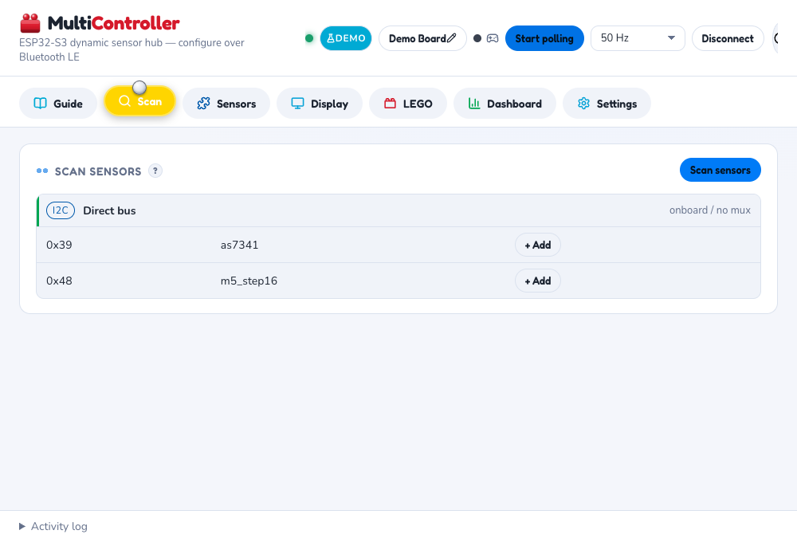
Scan tab — discovered sensors ready to add, grouped by bus
6.2 Add a sensor
Click + Add sensor.
Select the sensor type (Colour, Distance, 8-Angle, Step16, etc.).
Choose its I2C address (displayed during scan).
If using the Unit PaHub v2.1 multiplexer, select which mux channel (0–5).
Set the poll rate (1–100 Hz depending on sensor speed).
Click Save — configuration is written to flash.
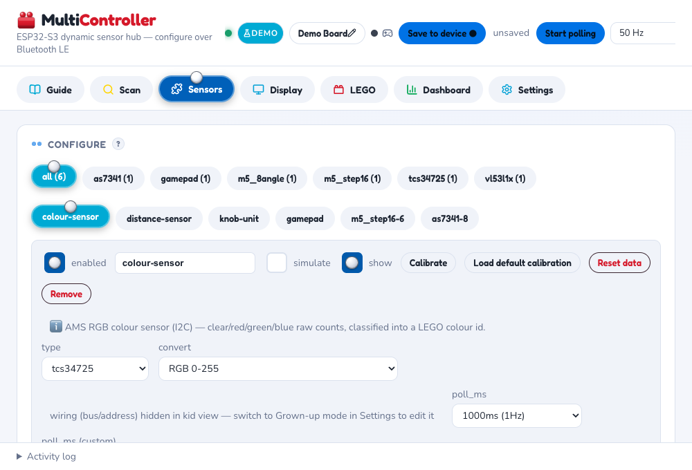
Sensors tab — each configured sensor gets its own tab pill; switch between them to edit type, poll rate, and calibration
6.3 Dashboard
Once configured and polling, the Dashboard tab shows live readings. The onboard display on AtomS3R updates in real time.
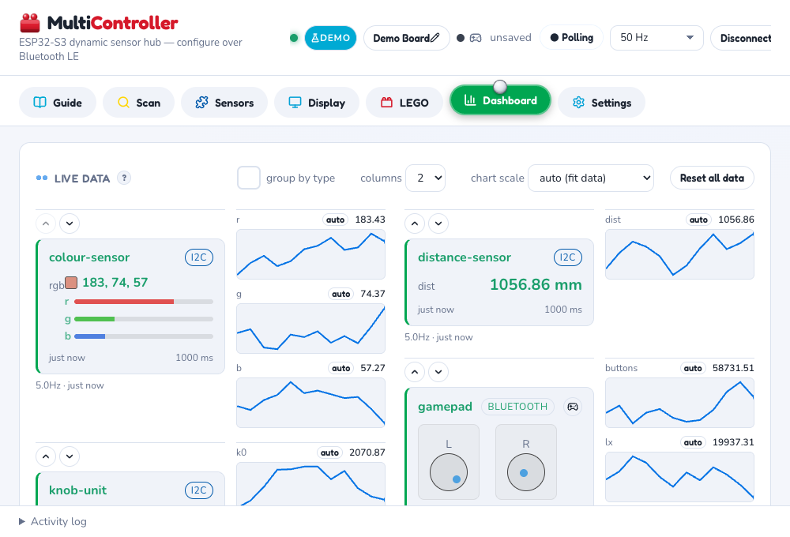
Dashboard tab — live charts update as sensors poll; switch to a 2-column layout to fit more sensors on screen at once
7. The onboard display (AtomS3R)
The 1.14″ screen shows device status and sensor readings without needing the web app.
Display modes
Boot splash: Device name and "starting..." (~700 ms on power-up).
Sensor list: One line per sensor with current reading. Press reset button to page down.
Gamepad mode: D-pad, button states, and stick/trigger values when a Bluetooth controller is paired.
These simulated views are rendered pixel-for-pixel from the actual firmware's display logic, so they show exactly what appears on the real 128×128 panel:
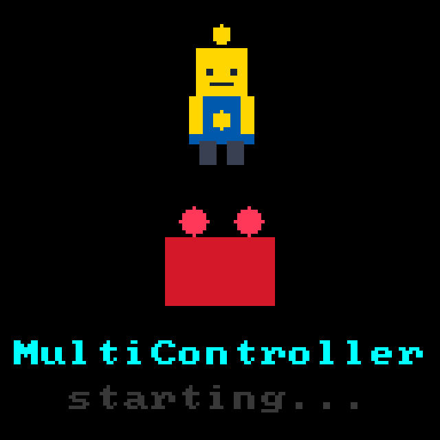
Boot splashThe Brix mascot stacked above the brick logo, then the device name and "starting…" underneath — shown for about 700 ms on power-up before the display switches to whichever mode was last used.
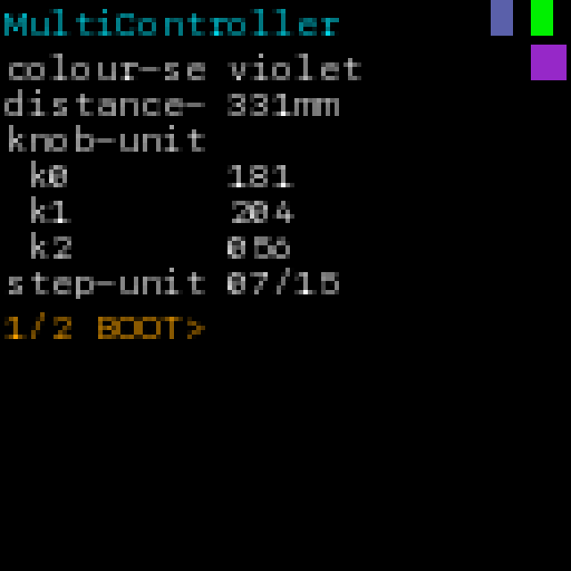
Sensor listOne line per configured sensor — colour name, distance in mm, each 8-Angle knob value, step position. The "1/2 BOOT>" indicator means there are more sensors than fit on one screen; press reset to page down.
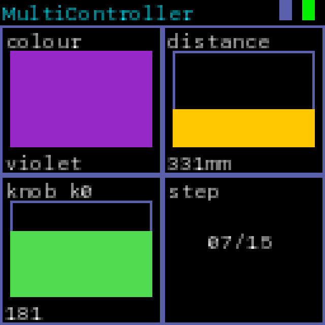
Tile modeThe same readings as a 2×2 grid of bordered tiles instead of a text list — a solid colour swatch, a heat-gradient distance bar, a hue-gradient angle bar, and a plain step-position number.
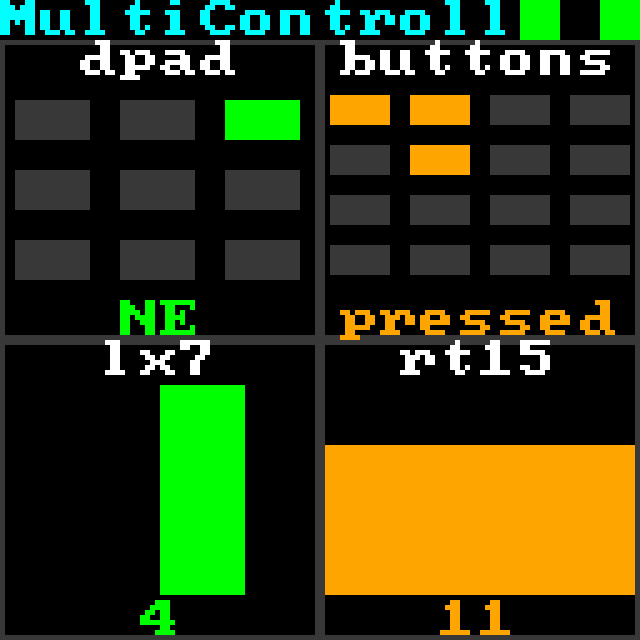
Gamepad modeShown automatically once a Bluetooth controller is paired — a d-pad direction grid, a 16-button bitmask grid, a centred bar for a stick axis, and a bottom-fill bar for a trigger.
Screen timeout: The display turns off after 5 minutes to save power. Press reset to wake.
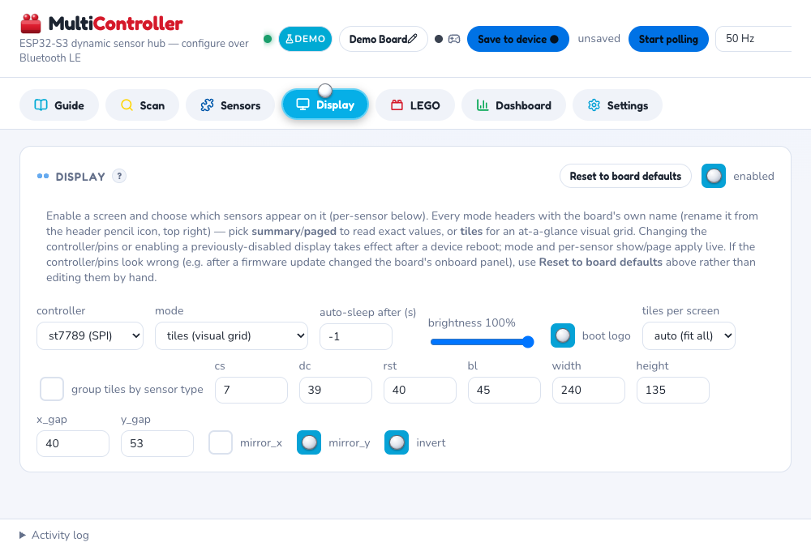
Web app's Display tab — configures what the onboard AtomS3R screen shows (mode, controller, pins)
8. Colour sensors and palette calibration
MultiController supports colour sensors (TCS34725, AS7341, etc.) with a teachable palette for classifying colours into custom names.
8.1 Basic calibration
In the web app, open Colour Calibration.
Select your colour sensor from the dropdown.
Click Sample white point — hold the sensor under white paper in your lighting.
Click Sample black point — hold under black paper.
Click Save defaults — stored on the device.
8.2 Teachable palette
Click + Add colour.
Name it (e.g., "red", "lego-red", "brick").
Hold the sensor under a sample and click Sample.
Repeat for each colour you want to recognize.
Click Save palette — the device now classifies readings into your named colours.
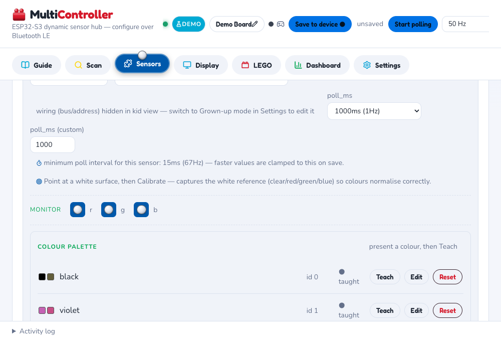
Colour calibration and teachable palette — scroll down on a colour sensor's card to Teach, Edit, or Reset each named colour
9. LEGO® hub emulation
MultiController emulates a LEGO® Powered Up Color Sensor, letting your SPIKE Prime or Powered Up hub read your custom sensors through a single connection.
9.1 Wiring the connection
Connect three wires from the M5Stack to your LEGO hub's LPF2 port:
LEGO connector
M5Stack pin
TX (yellow, pin 6)
GPIO 1 (RX)
RX (green, pin 5)
GPIO 2 (TX)
GND (black, pins 3–4)
GND
Use thin, flexible wires. LEGO connectors are delicate — apply only gentle pressure.
9.2 Configuring the emitter
In the web app, open the LEGO tab.
Select which sensor to emulate from (usually your colour sensor).
Choose profile: Color Sensor (0x3D) — sends RGB and lux readings to the hub.
Click Start emitter.
On the hub, scan for a new sensor in port A. You'll see "Color Sensor" appear.
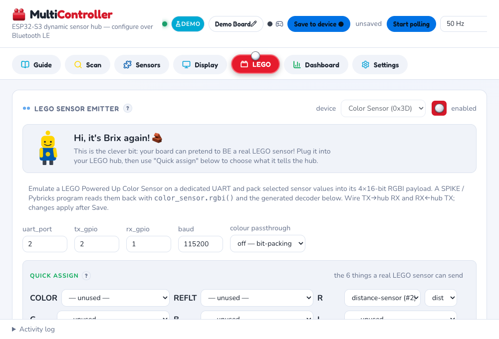
LEGO tab — Quick assign maps sensor values (R, G, B, I channels) to what the hub reads as a real Color Sensor
Now your SPIKE or Pybricks program reads your M5Stack sensors as a real LEGO sensor, updating in real time.
10. Bluetooth game controller bridge
Pair an Xbox Series X|S wireless controller (Bluetooth mode) so its input feeds into the LEGO hub.
10.1 Pairing
Put your Xbox controller in pairing mode (press back button for 3 seconds).
In the web app, open the Controller tab.
Click Scan for controller.
Select your controller and click Pair.
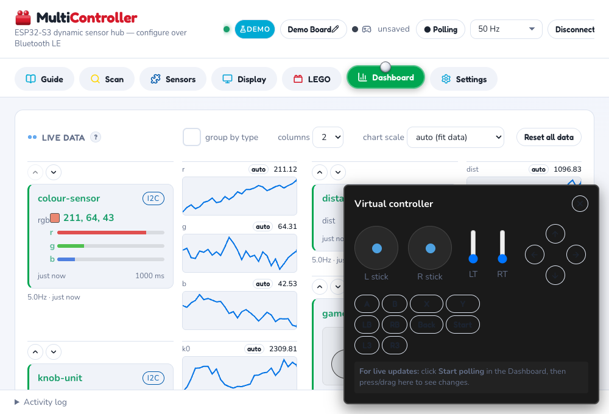
Virtual on-screen controller — test button/stick input without a physical Xbox controller connected, from the Dashboard's gamepad card
10.2 Using in LEGO code
Once paired, controller buttons and sticks are just another source in the LEGO tab's Quick assign panel (see section 9) — map a stick axis, trigger, d-pad, or the buttons bitmask onto any of the 6 channels the same way you'd map a sensor reading. Your hub program reads them all back through the exact same color_sensor.rgbi() / device.read() call, whatever mix of sensors and controller fields you've assigned.
The web app writes the decode program for you — open the LEGO tab in Grown-up mode (Settings → Grown-up mode) to see three ready-to-use versions of the exact same mapping, regenerated live as you change Quick assign:
Option A — LEGO blocks (SPIKE App / Word Blocks)
No typing needed — the Build it with blocks section shows the reporter block and maths to drag into the SPIKE App, generated for your current field layout:
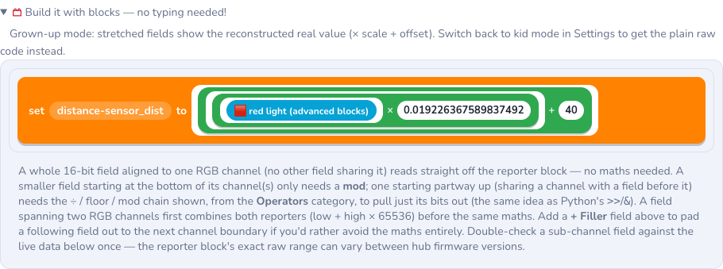
Build it with blocks — drag this into the SPIKE App exactly as shown; a field aligned to a whole channel needs no maths at all
Option B — SPIKE Prime / Robot Inventor (hub MicroPython)
Paste-and-run Python for the SPIKE App's Python mode or a Robot Inventor hub:
# SPIKE Prime / Robot Inventor — hub MicroPython.
# Plug the MultiController board into port A.
import color_sensor
from hub import port
import time
def decode(r, g, b, i):
# rebuild the 64-bit word (mask each channel — DATA16 can come back signed)
w = (r & 0xFFFF) | ((g & 0xFFFF) << 16) | ((b & 0xFFFF) << 32) | ((i & 0xFFFF) << 48)
out = {}
raw = (w >> 0) & 0xffff # 16-bit
out["distance_sensor_dist"] = raw * 0.019226367589837492 + 40
return out
while True:
r, g, b, i = color_sensor.rgbi(port.A)
out = decode(r, g, b, i)
native_colour = color_sensor.color(port.A)
native_reflect = color_sensor.reflection(port.A)
print(out, "native_colour:", native_colour, "native_reflect:", native_reflect)
time.sleep_ms(100)
Option C — Pybricks
Same mapping, for boards running Pybricks firmware instead:
# Pybricks (pybricks.com firmware).
# Plug the MultiController board into port A.
from pybricks.pupdevices import PUPDevice
from pybricks.parameters import Port
from pybricks.tools import wait
device = PUPDevice(Port.A)
def decode(r, g, b, i):
# rebuild the 64-bit word (mask each channel — DATA16 can come back signed)
w = (r & 0xFFFF) | ((g & 0xFFFF) << 16) | ((b & 0xFFFF) << 32) | ((i & 0xFFFF) << 48)
out = {}
raw = (w >> 0) & 0xffff # 16-bit
out["distance_sensor_dist"] = raw * 0.019226367589837492 + 40
return out
while True:
r, g, b, i = device.read(5) # mode 5 = RGB I
out = decode(r, g, b, i)
native_colour = device.read(0)[0]
native_reflect = device.read(1)[0]
print(out, "native_colour:", native_colour, "native_reflect:", native_reflect)
wait(100)
These are generated, not hand-written. The scale/offset numbers above match whatever's actually assigned in Quick assign on the device that generated this manual — yours will differ once you map your own sensors and gamepad fields. Copy the version the web app shows you, not this example, once you've set up your own fields.
11. GPIO / ADC pin sensors
Use GPIO pins as simple digital inputs (button, switch) or analog inputs (potentiometer, photoresistor).
11.1 Digital input (GPIO)
Connect a button or switch to a GPIO pin and GND. Configure as "GPIO Digital" sensor. Readings are 0 (open) or 1 (pressed).
11.2 Analog input (ADC)
Connect a potentiometer or light sensor to an ADC-capable pin (e.g., GPIO 3). Configure as "ADC" sensor. Readings range 0–4095 based on voltage.
12. Maintenance and troubleshooting
Factory reset
To reset the device to a fresh empty configuration:
In the web app, open the Settings tab.
Click Factory Reset.
Confirm the action.
The device reboots with an empty sensor configuration.
Button controls
The button on the M5Stack controls Bluetooth pairing mode:
Press and hold for 3+ seconds: Toggle Bluetooth on/off. First long press enables Bluetooth advertising (device becomes discoverable). Second long press disables it.
After factory reset: Hold button for 3+ seconds to enable Bluetooth so you can connect the web app and reconfigure sensors.
Short press: On AtomS3R with display, cycles through screen modes (sensor list, tiles, gamepad) without affecting Bluetooth state.
Firmware update
Download the latest MultiController.bin from GitHub Releases.